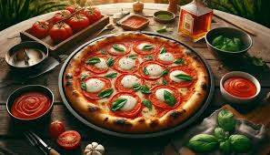

Pizza!

Homemade Pizza!
Pizza is a delicious dish that has captured the hearts of food lovers worldwide. Its origins trace
back to Naples, Italy, where it began as a simple flatbread topped with tomatoes, cheese, and fresh
basil. Over the years, it has evolved into a culinary canvas, allowing for endless variations and
toppings, from traditional options like pepperoni and mushrooms to gourmet choices such as arugula
and truffle oil. The balance of a crispy crust, rich sauce, and melted cheese makes each slice a
delightful experience.
Beyond its flavors, pizza serves as a social centerpiece, often enjoyed during gatherings, parties,
or casual meals with friends and family. Its convenience and shareability make it an ideal choice
for any occasion, whether it's a quick weeknight dinner or a festive celebration. With numerous
tyles, including New York thin crust, Chicago deep dish, and Neapolitan wood-fired, pizza can cater
to diverse tastes and preferences, ensuring that there’s a perfect slice for everyone.
Ingredients
For the Dough:
- 2 ¼ teaspoons (1 packet) active dry yeast
- 1 ½ cups warm water (about 110°F/43°C)
- 3 ½ to 4 cups all-purpose flour
- 2 tablespoons olive oil
- 1 teaspoon sugar
- 1 teaspoon salt
For the Toppings
- 1 cup pizza sauce (store-bought or homemade)
- 2 cups shredded mozzarella cheese
- Your choice of toppings (pepperoni, bell peppers, onions, mushrooms, olives, etc.)
- Fresh basil leaves (optional)
- Olive oil for drizzling
Instructions
-
Prepare the Dough:
- In a small bowl, mix the warm water, yeast, and sugar. Let it sit for about 5-10 minutes
until it becomes frothy.
-
In a large mixing bowl, combine 3 ½ cups of flour and salt. Make a well in the center
and add the yeast mixture and olive oil.
-
Mix until a dough forms. If the dough is too sticky, gradually add more flour until it
becomes smooth and elastic.
-
Knead the dough on a floured surface for about 5-7 minutes. Place it in a lightly
oiled bowl, cover with a damp cloth, and let it rise in a warm place for about 1-2
hours, or until doubled in size.
-
Preheat the Oven:
- Preheat your oven to 475°F (245°C). If you have a pizza stone, place it in the oven to heat.
-
Shape the Pizza:
-
Once the dough has risen, punch it down and divide it into two equal portions for
two medium pizzas or leave it whole for one large pizza.
-
On a floured surface, roll out the dough to your desired thickness. Transfer it to
a pizza peel or a baking sheet lined with parchment paper.
-
Add Toppings:
-
Spread a layer of pizza sauce over the base. Sprinkle mozzarella cheese evenly on top,
then add your favorite toppings.
-
Drizzle a little olive oil over the top for added flavor.
-
Bake:
-
Carefully slide the pizza onto the preheated pizza stone or place the baking sheet in
the oven. Bake for 12-15 minutes or until the crust is golden brown and the cheese is
bubbly and slightly browned.
-
Serve:
-
Remove the pizza from the oven and let it cool for a minute. Add fresh basil leaves if
desired, slice, and enjoy!